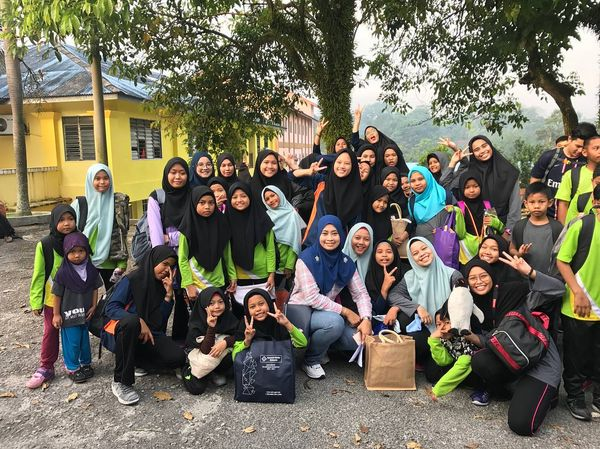
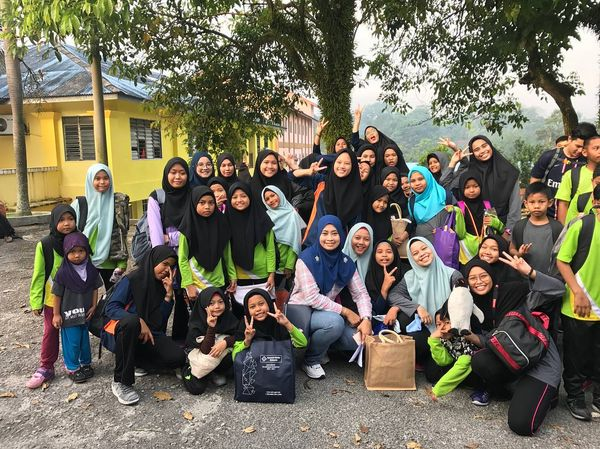

24-26/Jan/2020: Kem Bina Semangat bertempat di Teratak Riverview, Hulu Bernam. Semua pelajar dan kakitangan terlibat dalam program ini.
01/Feb/2020: Program ramah mesra penganjur bertempat di Asrama Damai Kuang.
07/Feb/2020: Lawatan Silaturrahim Asrama Damai ke Yayasan Basmi Kemiskinan, Serendah.
12/Feb/2020: Lawatan Silaturrahim Asrama Damai ke Rumah Pengasih Warga Perihatin (RPWP) di Bangi.
15/Feb/2020: Program asas internet untuk pelajar sekolah Menengah anjuran MTDC di Serdang.
29/Feb/2020: Program CSR pelajar Politeknik Sabak Bernam.
07/Mac/2020: Lawatan oleh pelajar sekolah rendah Angle Bird Sungai Buloh.
27/Mac/2020: Program Isra' dan Mikraj bertempat di Surau Damai.
 

© FB Asrama Damai Kuang